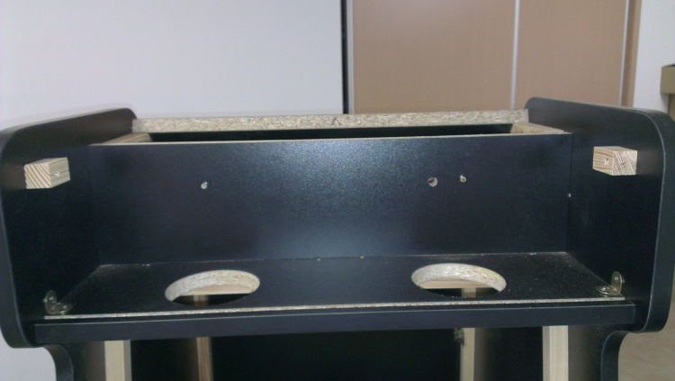
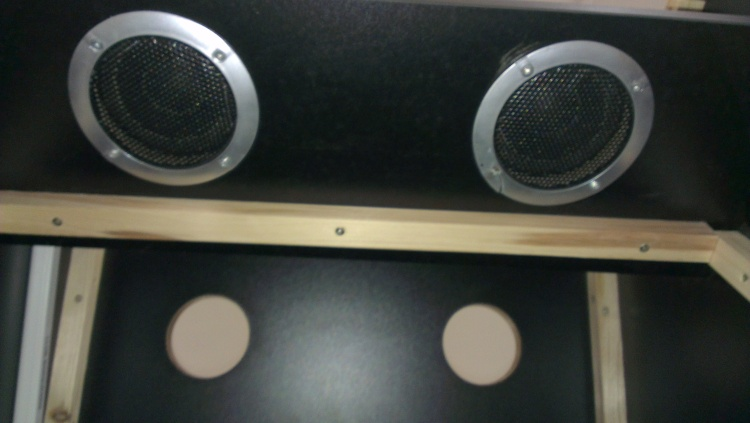

Construcción de máquina recreativa - El Sonido
Para el sonido de la máquina he utilizado unos altavoces viejos que tenía por casa y que hace tiempo usaba para el ordenador.

Una vez desmontados los he posicionado sobre la marquesina a ver como los repartía.

Cuando he encontrado la posición en la que quería situarlos he hecho los agujeros pertinentes.

Después de realizar los agujeros he montado los altavoces y el tubo de luz.

Una vez montado todo lo anterior he montado los embellecedores de los altavoces.
